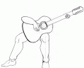
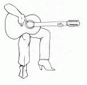
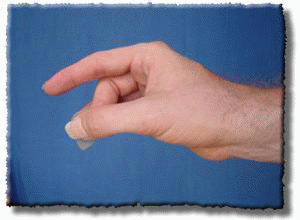

Gitara se svira sjedeci na stolici veličine primjerene uzrastu svirača.
Nisu sve gitare jednake po obliku, tako da se ne mogu sve jednako držati. Stvar je u tome da vam mora biti udobno. Međutim, gitare sa rezonantim korpusom su velike i debele, tako da postoje osnovni ili "klasični" načini držanja gitare.
Stolica mora biti ravna i bez naslona za ruke, neophodan je i mali stolčić za lijevu nogu. Ovo vrijedi manje više samo ukoliko vam gitara leži na lijevoj nozi. Postoji još jedna stvar što se da napraviti ukoliko imate uvjete, a namjerate se gitarom intenzivno baviti, a to je izrada malog, ali tvrdog jastučića s kožnom površinom da ne klizi gitara, tako da možete imati gitaru na povišenom, a noge na podu. Po želji dodati i jednu traku čička na gitaru i jastučić.
Lijevu nogu postavite na stolčić punim stopalom, time sprječavamo klizanje gitare. Udubljeni dio gitare naslonite na lijevu nogu.
Desnu nogu razmaknite od lijeve toliko da gitara legne širim trupom između njih. Desnu nogu postavite čitavim stopalom na pod. Gornji dio trupa (uži) naslonite na prsa. Postavite je koso tako da njena glava bude otprilike u visini vašeg ramena.
Primjeri pravilnog držanja gitare na slici:
 Najčešći način držanja trzalice je i pogrešan. Ova slika demonstrira držanje trzalice Držeci trzalicu palcem i drugim prstom prenisko u odnosu na prvi prst, što najudobnije ali nije pravilno jer u umanjuje fleksibilnost sviranja. kada krenete ozbiljnije svirati cete puno gubiti na brzini i tehnici.
Pravilno drzanje :

Pogrešno drzanje :
Ovako, pošto ste najvjerovatnije početnik, nema smisla da vam govorim o štimanju gitare po sluhu jer cete se samo zbuniti.
Najbolje je da napravite sljedece:
1. Ovdje možete skinuti besplatni štimer za kompjuter.
2. Instalirajte ga
3. Morate imati neki mikrofon
Nakon što imate sve , sada se bacite na stimanje gitare. Priblizite gitaru mikrofonu i trznite žicu jedanput i automatski ce vam štimer prepoznat koja je to žica i najvjerovatnije de vam strelicama pokazivat lijevo desno, odnosno zatezanje i otpustanje kako da nastimate tu zicu (naravno kod svakog štimera je drugacije ali je princip jako slican)
Bilo bi lijepo da naucite kako se koja zica zove :
e|------------ ovo je najtanja
B|------------
G|------------
D|------------
A|------------
E|------------ ovo je najdeblja
Ako ste imućni, onda si priuštite i normalni kromatski štimer (s mikrofonom). Za vas koji na znate što je to, to je uređaj koji radi ovo gore navedeno, ali u praktićnom kućištu veličine malo većeg mobitela. On na sebi ima lijepo display na kojem vam piše što svirate. Ako imate akustičnu ili klasičnu gitaru, samo upalite štimer i prinesete ga na 30 cm od gitare i trznete žicu koju želite naštimati. On u sebi ima ugrađen mikrofon i "pokupi" frekvenciju vaše žice i kaže vam da li je treba zategnuti ili otpustiti. Ako imate električnu, proces je joč lakši. Taj štimer na sebi uz mikrofon ima i rupu za uštekati kabel, što uklanja potrebu za mikrofonom. Dakle jedan kraj kabla u gitaru, a drugi u štimer i štimaj do mile volje.